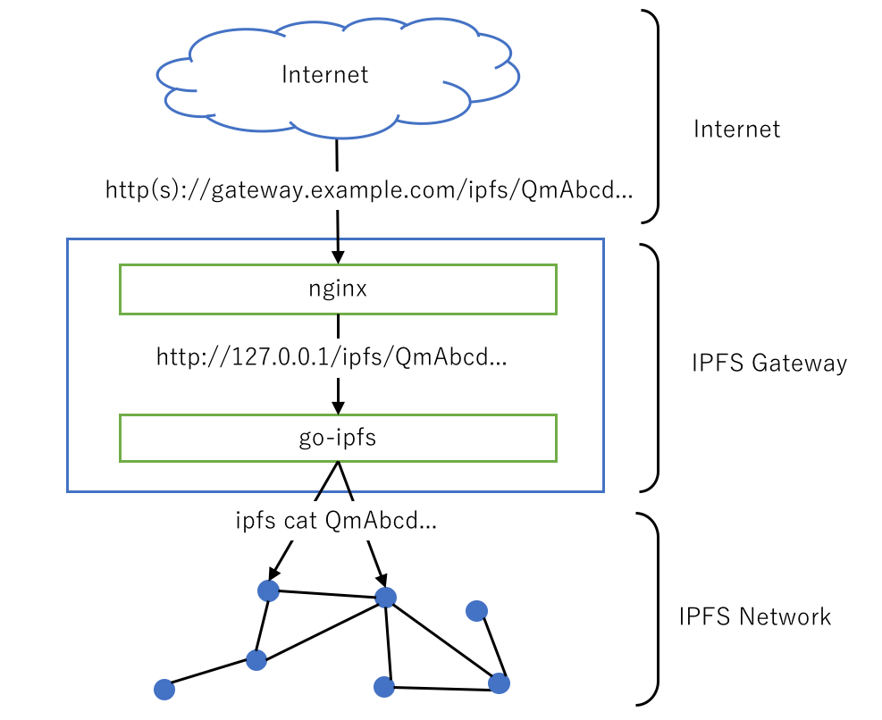

パブリックゲートウェイの構築 #
これまで述べきたとおりIPFSネットワークはHTTPプロトコルをベースとした既存のインターネットとは異なる独立したネットワークです。そのためIPFSのネットワークにインターネット（つまり既存のブラウザ）からアクセスするためにはIPFSネットワークへ橋渡してくれる場所を経由してアクセスする必要があります。その橋渡し役を担うのがIPFSゲートウェイであり、その中でも任意のユーザーに常時公開されているものをIPFSパブリックゲートウェイと呼びます。パブリックゲートウェイはいくつかあり、先の章で出てきたhttps://ipfs.io/ipfsや
https://ipfs-gateway.decentralized-web.jp/がそれに当たります。
もちろんこれらの既に公開されているゲートウェイ経由でIPFSネットワークへアクセスすることも可能ですが、あなたが技術的に興味があれば自身でゲートウェイを構築し公開することも可能です。本章ではパブリックゲートウェイ構築方法の例を示します。
リバースプロキシを利用した構築 #
本章末尾のNoteに記載のとおりgo-ipfsを設定変更するだけで手軽に自身のIPFSノードをパブリックゲートウェイを構築することはできます。しかしこの方法は、httpのアクセスのみでhttpsでのアクセスを許可することができないこと、セキュリティ面での懸念があること、さらにアクセスが増えた場合の負荷分散が難しいというように、多くのデメリットがあります。そのためにWebサーバ（ここではnginxを想定します）をリバースプロキシとして利用しgo-ipfsへのアクセスを中継する方法を取るのが一般的です（下図）。

以下にUbuntu 16.04 LTS環境での具体的な手順例を示します。（以降、go-ipfsが稼働するサーバがグローバルIPアドレスとドメインを持っておりDNS設定されている前提で進めます。）
1. go-ipfsの自動起動設定 #
先にインストールしているgo-ipfsをサーバ再起動時などに自動起動する設定を行います。
$ sudo vi /lib/systemd/system/ipfs-daemon.service
で下記の内容が記されたファイルを生成します。ここではコマンド/usr/local/bin/ipfs daemonがubuntuユーザー＆グループで実行されることを指定しています。（その他の設定の詳細については
ここが参考になります。）
[Unit]
Description=ipfs daemon
[Service]
ExecStart=/usr/local/bin/ipfs daemon
Restart=always
User=ubuntu
Group=ubuntu
[Install]
WantedBy=multi-user.target
用意したファイルでの自動起動を有効化し、実際にサーバ再起動時にgo-ipfsが自動起動されるかを確認します。
$ sudo systemctl enable ipfs-daemon
Created symlink from /etc/systemd/system/multi-user.target.wants/ipfs-daemon.service to /lib/systemd/system/ipfs-daemon.service.
$ sudo shutdown -r now #自動起動されるか実際にサーバ再起動し確認。
$ ps aux |grep ipfs #プロセス確認
ubuntu 639 1 4 11:21 ? 00:00:05 /usr/local/bin/ipfs daemon
ubuntu 942 929 0 11:23 pts/0 00:00:00 grep --color=auto ipfs
2.リバースプロキシに用いるnginxのインストールと設定 #
webサーバはapacheなどもありmod_proxyを導入することでリバースプロキシとして利用することも可能ですが、ここではwebサーバとしてnginxを採用したいと思います。nginxをまずサーバにインストールします。
$ sudo apt-get update
$ sudo apt-get upgrade
$ sudo apt-get install nginx
下記ファイル内容のようにnginx設定をviなどを用いて当該ファイル内容を変更します。
$ cat /etc/nginx/sites-available/default
# http(80番ポート)アクセスをhttps(443番ポート)にリダイレクトする設定
server {
listen 80;
server_name ipfs-gateway.decentralized-web.jp;
return 301 https://$host$request_uri;
}
# httpsへのアクセスを受けた場合の設定
server {
listen 443 ssl default_server;
index index.html index.htm index.nginx-debian.html;
# SSL証明書関連の設定。
# 証明書はLet's encrypt（https://letsencrypt.org/）を利用して用意。
# 設定内のドメインは各環境に合わせること。
server_name pfs-gateway.decentralized-web.jp;
ssl_certificate /etc/letsencrypt/live/ipfs-gateway.decentralized-web.jp/cert.pem;
ssl_certificate_key /etc/letsencrypt/live/ipfs-gateway.decentralized-web.jp/privkey.pem;
# バックエンドのgo-ipfsとの連携設定。
# ドメイン以下のアクセス全て（/）を/var/www/html以下のindex.htmlへ。
location / {
root /var/www/html;
}
# ドメイン以下/ipfs/か/ipns/の場合はgo-ipfsへ。
location ~*/ip[fn]s/.+ {
proxy_pass http://127.0.0.1:8080;
proxy_http_version 1.1;
proxy_set_header Upgrade $http_upgrade;
proxy_set_header Connection 'upgrade';
proxy_set_header Host $host;
proxy_cache_bypass $http_upgrade;
}
}
上記nginxの設定ファイル内のコメントにも書いたようにHTTPS通信する際の証明書は Let’s encryptを利用して証明書を発行しています。証明書発行は自動で行われ容易にかつ手早く発行が可能です。Let’s encryptについては ここで詳しく解説してくれているので参考にしてください1。
最後にもう一度サーバ再起動を行いnginxとgo-ipfsが自動起動されることや所定のアドレスにブラウザからアクセスしコンテンツが表示されることを確認して完了です。
上記の手順はFirewallの設定などセキュリティ関連の手順は割愛しています。不特定多数のアクセスを許可するサーバとしての十分なセキュリティ対策は別途必ず行うようにしてください。
パブリックゲートウェイを構築する最も簡単な方法は、go-ipfsの設定ファイル[^1]内のAddresses項目で"Gateway": "/ip4/127.0.0.1/tcp/8080"とローカルホストのみが許可されているところを、全てのIPアドレスからのアクセスを許可するように"Gateway": "/ip4/0.0.0.0/tcp/8080"に変更することです。この設定状態でipfs daemonコマンドを実行すれば、任意のクライアントのブラウザから、たとえばURLhttp://[当該サーバIPアドレス]:8080/ipfs/QmT78zSuBmuS4z925WZfrqQ1qHaJ56DQaTfyMUF7F8ff5oにアクセスすることが可能になります。しかし、本文中に記載のとおりセキュリティや運用の側面からこの方法はあまり推奨されません。